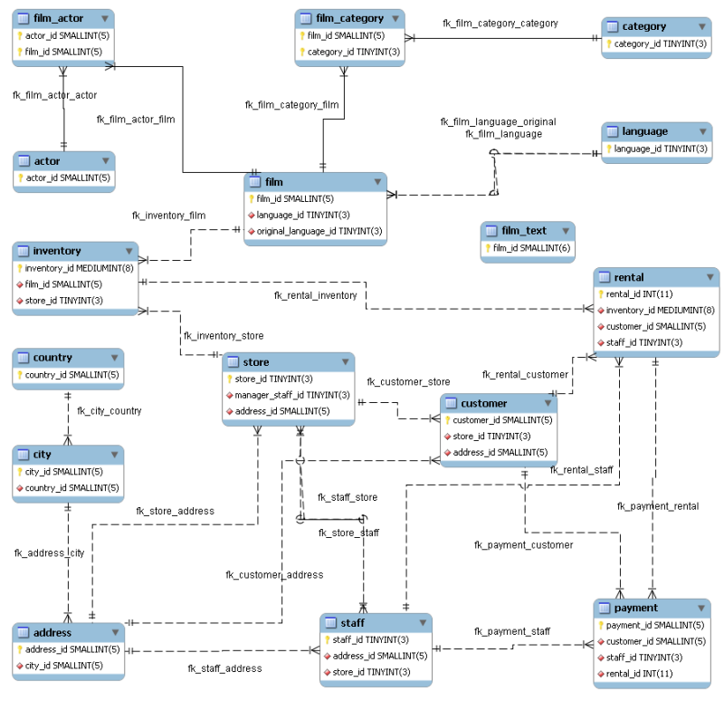
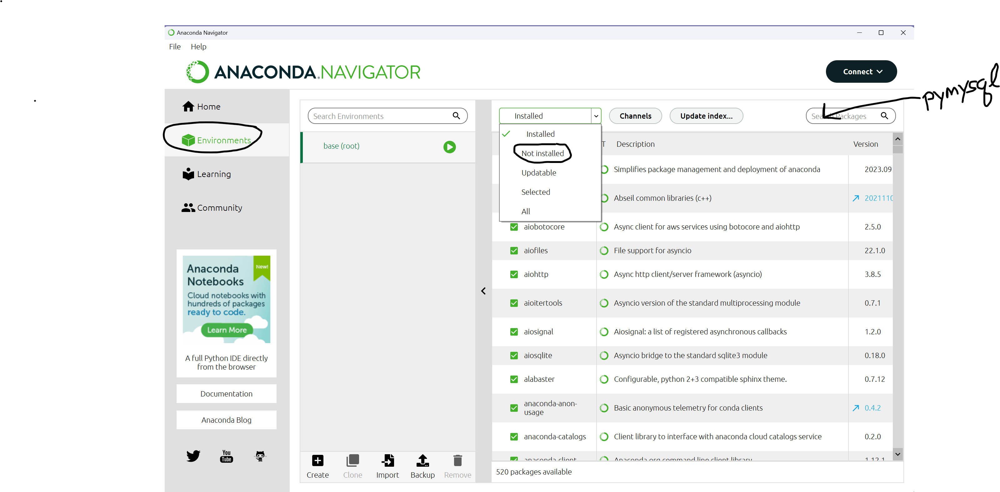

$ conda install sqlalchemy
$ conda install pymysqlA brief introduction to Databases and SQL
Fundamentals of Data Science
Introduction
In this unit we will do some very basic work with a cloud database. We will:
- give a brief introduction to relational databases
- illustrate how one can download information from such a database into R tibbles or python dataframes
- discuss the
joinoperation on the R/python level - give a brief introduction to SQL
- write some SQL queries
There are many types of relational databases. For these examples we will work specifically with MySQL version 8.0 on Amazon Web Services. Most of what we will do would carry over with minor changes to any of the major relational databases.
RDBs in (very brief)
A relational database is an efficient means of storing data in a way that allows one to carry out the same family of operations that we have used with tibbles and dataframes: selecting, filtering, grouping, summarizing, ordering, and synthesizing new data.
Databases are generally designed to operate at a much larger scale than the tabular data structures we’ve used in Python and R. Instead of storing data in a single big table, relational databases break up the data into many tables which may have many rows but generally have relatively few columns. A family of indexes link the different tables together.
For a very simple example, imagine we have a dataframe with 10000 people’s names and addresses. The city column in this dataframe probably contains many repetitions (lots of occurrences of say, New York City). In a database, one would typically replace the city name column with an index into another table that just contains a list of cities.
For another example, in the sakila database (which is a database of films and actors often used for demo purposes) there is a table called language that contains a number which is alanguage_id and a name which is 20 text characters. In the film table, there is a language_id field which points into the language table so one can find the name of the film’s language.
The most fundamental trick to working with relational databases is learning how to put the information together from the different tables in order to obtain the specific information you are interested in.
The relationship among all the tables is presented in what’s called an entity-relationship diagram.

In this diagram, the box for film_actor shows that each row of the table is defined by the combination of an actor_id and a film_id. Notice that the film table has two language_id fields, one for the original language and one for the language of the particular version.
The database had its origins in an inventory tracking system for a video rental store (yes, it’s that old) and that’s where the inventory/rental tables come from.
Setting up
Setting up for this lesson could be complicated. We need the following tools.
For Python, we need:
- the
sqlalchemypython library.
- the
pymysqlodbc connector package.
These can be installed via the GUI package manager provided as part of anaconda Navigator, or using the conda shell command. If you use conda, execute the following commands in a terminal window.
In Anaconda Navigator, you will see the “Environments” tab on the left side of the start up screen. You can select “All” from the dropdown on the top right, and search for pymysql; click the checkbox to install it.

To verify that you have the packages properly installed, start a jupyter notebook and run the following commands.
import sqlalchemy as sqla
import pymysqlIf these commands fail, or you don’t want to deal with installing this software, you can use a Google colab notebook opened through Google Drive. In the colab notebook, you should already have sqlalchemy available. You can use !pip to install pymysql. The code here should work:
import sqlalchemy as sqla
!pip install pymysql
import pymysqlFor R, we need:
- The
dbplyrpackage (which gives database functionality todplyr) - The
DBIpackage which handles communication - The
RMariaDBpackage which gives the MySQL interface
In RStudio, you should be able to run the following commands.
install.packages("dbplyr")
install.packages("DBI")
install.packages("RMariaDB")
library(dbplyr)
library(DBI)
library(RMariaDB)To work through some examples using both python and R:
A key concept in working with databases (and tabular data generally) is the notion of a join. We look at joins here:
A few additional topics (HAVING and WITH) are discussed here.